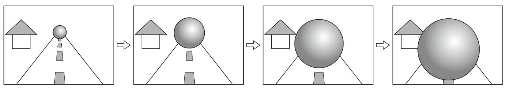
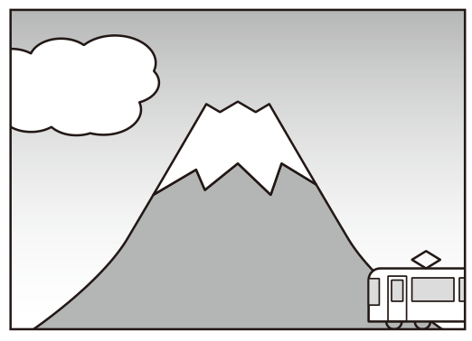
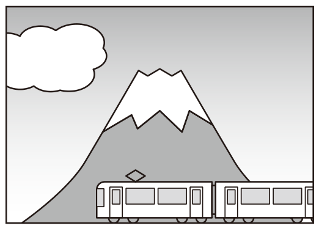
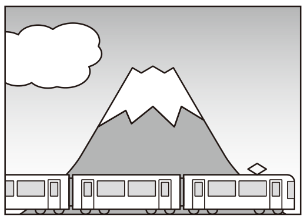
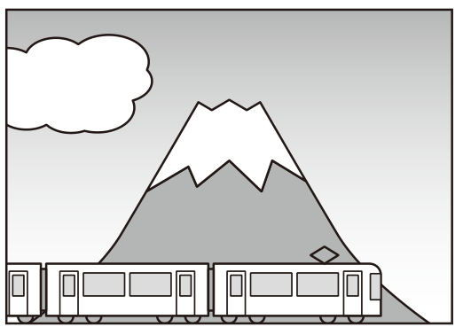
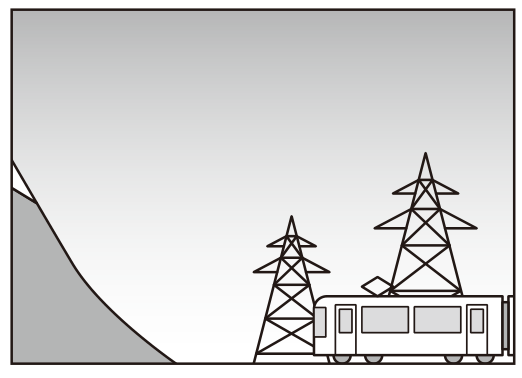
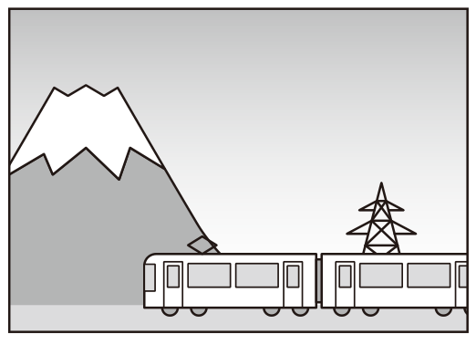
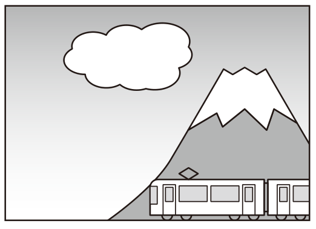
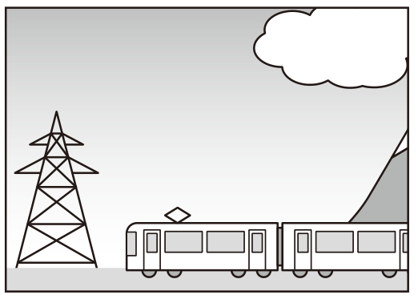

B 次の動画に関する文章を読み，後の問い（問1～6）に答えよ。
スマートフォンの普及とともに動画の撮影が身近になっている。動画はわずかに異なる複数の静止画を連続して表示することで動いているように見せる表現手法であり，動画を構成する1枚1枚の静止画をフレーム，1秒あたりのフレーム数をフレームレートという。フレームレートはfpsという単位で表し，例えば，10fpsの動画は1秒間に10枚のフレームで構成される。フレームレートは，(a)映画なら約24fps，デジタル放送など一般の動画は約30fps，動きの速いスポーツの映像などは約60fpsといったように目的に応じて選択される。
動画のデータ量は静止画に比べて大きく，主に時間と解像度，フレームレートと圧縮技術が関係する。例えば，(b)2時間の映画（24fps）が解像度1920×1080，24ビットフルカラーであれば，圧縮なしで約1Tバイトにもなる。そこで，(c)動画の各フレーム間で異なるところの情報のみを記録してデータ量を減らす方法がある。例えば，図4のボールが手前に転がる動画では，背景の画像は変わらないので1フレーム目の画像全体を記録して，後はボールの部分のみを記録しても同様の動画が得られる。
撮影した動画は，後から動画編集ソフトウェアで不要な部分を削除したり，(d)フレームレートや解像度などを変更したりすることもできる。

問1 下線部(a)の24fps の映画について，この1フレームごとにデジタル化された画像を1枚ずつすべてつなぎ合わせて，60fps の動画を作成すると，その動画はどのようになるか。最も適当なものを，次の⓪～③のうちから一つ選べ。コ
問2 次の図5は，下線部(b)を計算する式と単位である。空欄サ・シに入れるのに最も適当なものを，後の解答群のうちから一つずつ選べ。
1フレームのデータ量
1920 × 1080 × サ
総フレーム数
2 × 60 × シ × 24
単位
バイト
図5 2時間の映画のデータ量（計算式）
問3 図6に示す二つの動画ⅠとⅡに下線部(c)の方法を適用し，その結果を比較する。このとき，後の文章中の空欄スに当てはまる数字をマークせよ。また，空欄セ～タに入れるのに最も適当なものを，後の解答群のうちから一つずつ選べ。ただし，同じものを繰り返し選んでもよい。
Ⅰ 山全体が映るようにカメラを三脚に固定して，通り行く列車を60fpsで撮影




Ⅱ カメラを固定せず，通り行く列車をできるだけ追うようにして60fpsで撮影




図6 動画Ⅰと動画Ⅱのフレーム画像
動画ⅠもⅡも同じス秒間の動画であるが，動画Ⅰは1フレーム目のセと2フレーム目以降に変化したソが記録される。それに対し，動画Ⅱは各フレームでタが変化しているので，動画Ⅰの方がデータ量を少なくすることができる。
問4 下線部(d)について，図6の動画Ⅰ全体（1フレーム目から最後の360フレーム目まで）を，次のあ～うの各方法で動画編集ソフトウェアを用いて変換したところ，動画のデータ量はいずれも減少した。このとき，変換後の画像のみの総データ量の大小関係を表した不等式として最も適当なものを，後の⓪～⑤のうちから一つ選べ。なお，動画Ⅰは24ビットフルカラーとし，圧縮は考えないものとする。チ
問5 動画ファイルには，画像データとは別に音声データも含まれている。動画ファイルに含まれる音声データに関する次の文章中の空欄ツに入れるのに最も適当なものを，後の⓪～③のうちから一つ選べ。
動画ファイルに記録されている音声データは，サンプリング周波数として44．1kHz や48kHz が用いられることが多い。例えば，動画を24fps で撮影した際，サンプリング周波数48kHz で音声も収録したとすると，1フレームを見せる時間の間で，一つの音声データ（1チャンネル）につきツ回標本化されていることになる。
問6 次のあ～うの動画に関する説明の正誤の組合せとして最も適当なものを，後の⓪～⑦のうちから一つ選べ。テ